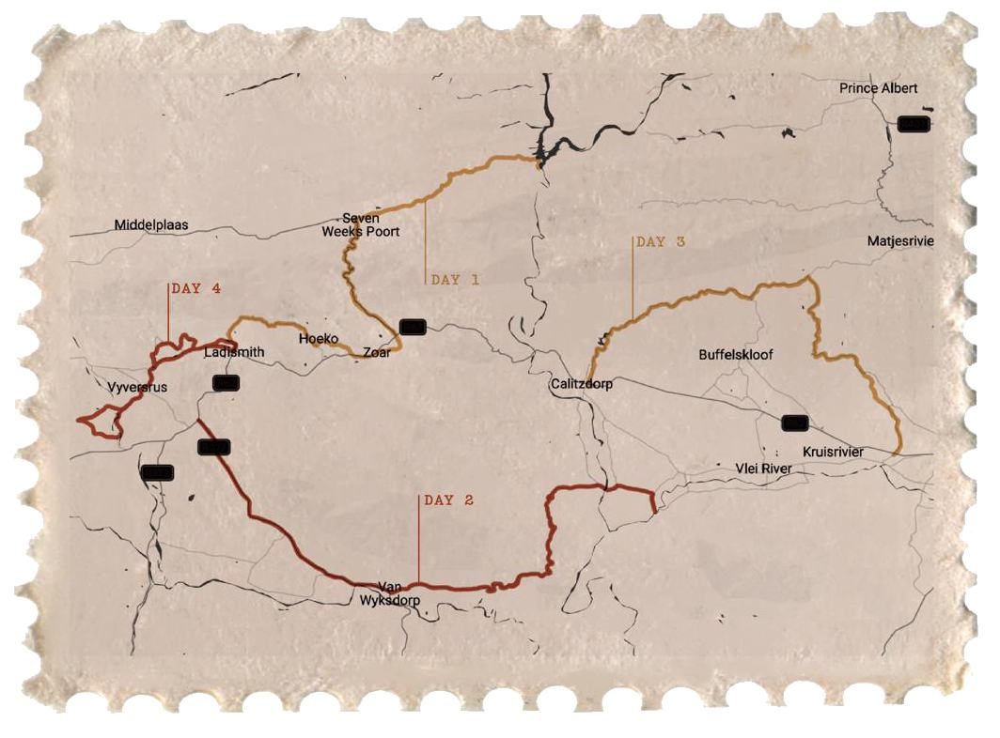

Connected routes across mountain passes, valleys and quiet Karoo roads.
Centered around Ladismith, our route network connects Rooiberg, Seweweekspoort, the Hoeko Valley and surrounding communities. Rides are adjusted to conditions, seasons and your group.
Explore from one comfortable base.
Link remote valleys and mountain passes.
Typical options range from 50 to 120 km.

The drawn map and the interactive layer are the route network published on karoogravel.co.za. Lines are indicative and change with weather, season and the group.
Our guides can match a route to your group and the conditions.